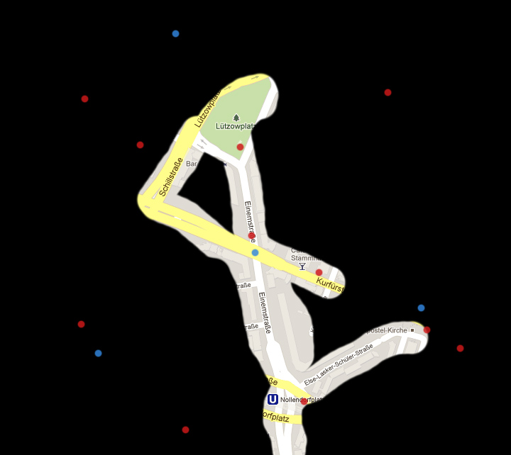

teamgrau does Softwareproject Human-Centered Computing
teamgrau is a team of students of Freie Universität Berlin and Berlin University of Arts in the context of a software project on Human Centered Computing.
We proudly present Altourism (working title). Altourism will be an Android app for people who want to break out of the well known trails. It should make tourism fun again with an approach by making sightseeing a game. Your city of choice will be covered in fog at the beginning but will yield so you can track your way through the city. But why should you do that. Altourism has stories, fun facts and secret places imbedded into it's map of the city. These wait to be unlocked by you by visiting it in the real world.
The persona we created and is used throughout the development process can be found below
Francesco Di Cuore (de)
You start by a map covered in fog so you can only see your immediate environment. Additionally there are points of interest (POIs) marked. Behind these hide stories, pictures, fun facts or unicorns which wait to be discovered by you. After discovering your environment, the fog lifts along your path and will result in something like the following picture.
| Iteration # | Goals | Progress |
|---|---|---|
| 1st Iteration (de) |
|
33% |
teamgrau consists of mix of students from Berlin Frei Universität Berlin (FU) and Berlin University of Arts (UdK). Namely Valerian Blos (@valerianBlos UdK), Simon Wichman (@cellard0or FU) and Thomas Eichinger (@thomaseichinger FU).
Having trouble with our software? Open an issue.